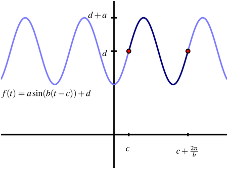
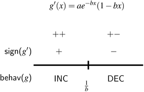
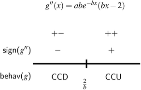
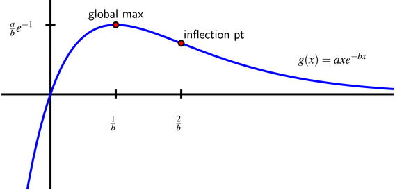
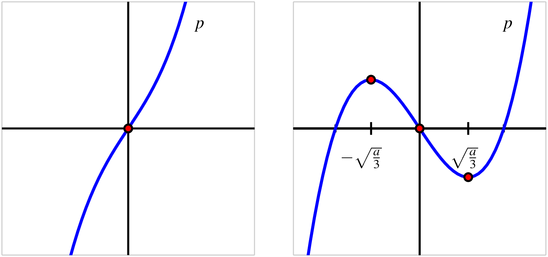
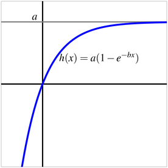
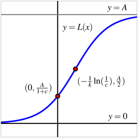

Section3.2Using derivatives to describe families of functions¶ permalink
{In this section, we strive to understand the ideas generated by the following important questions:
Given a family of functions that depends on one or more parameters, how does the shape of the graph of a typical function in the family depend on the value of the parameters?
How can we construct first and second derivative sign charts of functions that depend on one or more parameters while allowing those parameters to remain arbitrary constants?
}
Subsection3.2.1Introduction
Mathematicians are often interested in making general observations, say by describing patterns that hold in a large number of cases. For example, think about the Pythagorean Theorem: it doesn't tell us something about a single right triangle, but rather a fact about every right triangle, thus providing key information about every member of the right triangle family. In the next part of our studies, we would like to use calculus to help us make general observations about families of functions that depend on one or more parameters. People who use applied mathematics, such as engineers and economists, often encounter the same types of functions in various settings where only small changes to certain constants occur. These constants are called parameters.
Figure3.2.1The graph of \(f(t) = a \sin(b(t-c)) + d\) based on parameters \(a\), \(b\), \(c\), and \(d\).
We are already familiar with certain families of functions. For example, \(f(t) = a \sin(b(t-c)) + d\) is a stretched and shifted version of the sine function with amplitude \(a\), period \(\frac{2\pi}{b}\), phase shift \(c\), and vertical shift \(d\). We understand from experience with trigonometric functions that \(a\) affects the size of the oscillation, \(b\) the rapidity of oscillation, and \(c\) where the oscillation starts, as shown in Figure 3.2.1, while \(d\) affects the vertical positioning of the graph.
In addition, there are several basic situations that we already understand completely. For instance, every function of the form \(y = mx + b\) is a line with slope \(m\) and \(y\)-intercept \((0,b)\). Note that this form allows us to consider every possible line through two parameters. Further, we understand that the value of \(m\) affects the line's steepness and whether the line rises or falls from left to right, while the value of \(b\) situates the line vertically on the coordinate axes.
For other less familiar families of functions, we would like to use calculus to understand and classify where key behavior occurs: where members of the family are increasing or decreasing, concave up or concave down, where relative extremes occur, and more, all in terms of the parameters involved. To get started, we revisit a common collection of functions to see how calculus confirms things we already know.
Preview Activity
Let \(a\), \(h\), and \(k\) be arbitrary real numbers with \(a \ne 0\), and let \(f\) be the function given by the rule \(f(x) = a(x-h)^2 + k\).
What familiar type of function is \(f\)? What information do you know about \(f\) just by looking at its form? (Think about the roles of \(a\), \(h\), and \(k\).)
Next we use some calculus to develop familiar ideas from a different perspective. To start, treat \(a\), \(h\), and \(k\) as constants and compute \(f'(x)\).
Find all critical values of \(f\). (These will depend on at least one of \(a\), \(h\), and \(k\).)
Assume that \(a \lt 0\). Construct a first derivative sign chart for \(f\).
Based on the information you've found above, classify the critical values of \(f\) as maxima or minima.
Subsection3.2.2Describing families of functions in terms of parameters
Given a family of functions that depends on one or more parameters, our goal is to describe the key characteristics of the overall behavior of each member of the familiy in terms of those parameters. By finding the first and second derivatives and constructing first and second derivative sign charts (each of which may depend on one or more of the parameters), we can often make broad conclusions about how each member of the family will appear. The fundamental steps for this analysis are essentially identical to the work we did in Section 3.1, as we demonstrate through the following example.
Consider the two-parameter family of functions given by \(g(x) = axe^{-bx},\) where \(a\) and \(b\) are positive real numbers. Fully describe the behavior of a typical member of the family in terms of \(a\) and \(b\), including the location of all critical numbers, where \(g\) is increasing, decreasing, concave up, and concave down, and the long term behavior of \(g\).
Solution.
We begin by computing \(g'(x)\). By the product rule,
and thus by applying the chain rule and constant multiple rule, we find that
\[
g'(x) = axe^{-bx}(-b) + e^{-bx}(a).
\]
To find the critical numbers of \(g\), we solve the equation \(g'(x) = 0\). Here, it is especially helpful to factor \(g'(x)\). We thus observe that setting the derivative equal to zero implies
\[
0 = ae^{-bx}(-bx + 1).
\]
Since we are given that \(a \ne 0\) and we know that \(e^{-bx} \ne 0\) for all values of \(x\), the only way the preceding equation can hold is when \(-bx + 1 = 0.\) Solving for \(x\), we find that \(x = \frac{1}{b}\), and this is therefore the only critical number of \(g\).
Now, recall that we have shown \(g'(x) = ae^{-bx}(1 - bx)\) and that the only critical number of \(g\) is \(x = \frac{1}{b}\). This enables us to construct the first derivative sign chart for \(g\) that is shown in Figure 3.2.3.
Figure3.2.3The first derivative sign chart for \(g(x) = axe^{-bx}\).
Note particularly that in \(g'(x) = ae^{-bx}(1-bx)\), the term \(ae^{-bx}\) is always positive, so the sign depends on the linear term \((1-bx)\), which is zero when \(x = \frac{1}{b}\). Note that this line has negative slope (\(-b\)), so \((1-bx)\) is positive for \(x \lt \frac{1}{b}\) and negative for \(x > \frac{1}{b}\). Hence we can not only conclude that \(g\) is always increasing for \(x \lt \frac{1}{b}\) and decreasing for \(x > \frac{1}{b}\), but also that \(g\) has a global maximum at \((\frac{1}{b}, g(\frac{1}{b}))\) and no local minimum.
We turn next to analyzing the concavity of \(g\). With \(g'(x) = -abxe^{-bx} + ae^{-bx}\), we differentiate to find that
\[
g''(x) = ab^2xe^{-bx} - 2abe^{-bx} = abe^{-bx}(bx - 2).
\]Figure3.2.4The second derivative sign chart for \(g(x) = axe^{-bx}\).
Similar to our work with the first derivative, we observe that \(abe^{-bx}\) is always positive, and thus the sign of \(g''\) depends on the sign of \((bx-2)\), which is zero when \(x = \frac{2}{b}\). Since \((bx-2)\) represents a line with positive slope \((b)\), the value of \((bx-2)\) is negative for \(x \lt \frac{2}{b}\) and positive for \(x > \frac{2}{b}\), and thus the sign chart for \(g''\) is given by the one shown in Figure 3.2.4. Thus, \(g\) is concave down for all \(x \lt \frac{2}{b}\) and concave up for all \(x > \frac{2}{b}\).
Finally, we analyze the long term behavior of \(g\) by considering two limits. First, we note that
Since this limit has indeterminate form \(\frac{\infty}{\infty}\), we can apply L'Hopital's Rule and thus find that \(\lim_{x \to \infty} g(x) = 0\). In the other direction,
since \(ax \to -\infty\) and \(e^{-bx} \to \infty\) as \(x \to -\infty\). Hence, as we move left on its graph, \(g\) decreases without bound, while as we move to the right, \(g(x) \to 0\).
All of the above information now allows us to produce the graph of a typical member of this family of functions without using a graphing utility (and without choosing particular values for \(a\) and \(b\)), as shown in Figure 3.2.5.
Figure3.2.5The graph of \(g(x) = axe^{-bx}\).
We note that the value of \(b\) controls the horizontal location of the global maximum and the inflection point, as neither depends on \(a\). The value of \(a\) affects the vertical stretch of the graph. For example, the global maximum occurs at the point \((\frac{1}{b}, g(\frac{1}{b})) = (\frac{1}{b}, \frac{a}{b}e^{-1})\), so the larger the value of \(a\), the greater the value of the global maximum.
\hspace{5.0in}
The kind of work we've completed in Example 3.2.2 can often be replicated for other families of functions that depend on parameters. Normally we are most interested in determining all critical numbers, a first derivative sign chart, a second derivative sign chart, and some analysis of the limit of the function as \(x \to \infty\). Throughout, we strive to work with the parameters as arbitrary constants. If stuck, it is always possible to experiment with some particular values of the parameters present to reduce the algebraic complexity of our work. The following sequence of activities offers several key examples where we see that the values of different parameters substantially affect the behavior of individual functions within a given family.
Consider the family of functions defined by \(p(x) = x^3 - ax\), where \(a \ne 0\) is an arbitrary constant.
Find \(p'(x)\) and determine the critical values of \(p\). How many critical values does \(p\) have?
Construct a first derivative sign chart for \(p\). What can you say about the overall behavior of \(p\) if the constant \(a\) is positive? Why? What if the constant \(a\) is negative? In each case, describe the relative extremes of \(p\).
Find \(p''(x)\) and construct a second derivative sign chart for \(p\). What does this tell you about the concavity of \(p\)? What role does \(a\) play in determining the concavity of \(p\)?
Without using a graphing utility, sketch and label typical graphs of \(p(x)\) for the cases where \(a > 0\) and \(a \lt 0\). Label all inflection points and local extrema.
Finally, use a graphing utility to test your observations above by entering and plotting the function \(p(x) = x^3 - ax\) for at least four different values of \(a\). Write several sentences to describe your overall conclusions about how the behavior of \(p\) depends on \(a\).
We first note that \(p'(x) = 3x^2 - a\), so to find critical values we set \(p'(x) = 0\) and solve for \(x\). This leads to the equation \(3x^2 - a = 0\), which implies
\[
x^2 = \frac{a}{3}.
\]
If \(a > 0\), then the solutions to this equation are \(x = \pm \sqrt{\frac{a}{3}}\); if \(a \lt 0\), then the equation has no solution. Hence, \(p\) has two critical numbers (\(x = \pm \sqrt{\frac{a}{3}}\)) whenever \(a > 0\) and no critical numbers when \(a \lt 0\).
For the case when \(a \lt 0\), we observe that \(p'(x) = 3x^2 - a\) is positive for every value of \(x\), and thus \(p\) is always increasing and has no relative extreme values. (There are no critical numbers to place on the first derivative sign chart, and \(p'\) is always positive.)
For the case when \(a > 0\), we observe that \(p'(x) = 3x^2 - a\) is a concave up parabola with zeros at \(x = -\sqrt{\frac{a}{3}}\) and \(x = +\sqrt{\frac{a}{3}}\). It follows that for \(x \lt -\sqrt{\frac{a}{3}}\), \(p'(x) > 0\) (so \(p\) is increasing); for \(-\sqrt{\frac{a}{3}} \lt x \lt \sqrt{\frac{a}{3}}\), \(p'(x) > 0\) (so \(p\) is decreasing); and for \(x > \sqrt{\frac{a}{3}}\), \(p'(x) > 0\) (so \(p\) is again increasing). In this situation, we see that \(p\) has a relative maximum at \(x = -\sqrt{\frac{a}{3}}\) and a relative minimum at \(x = +\sqrt{\frac{a}{3}}\).
Since \(p'(x) = 3x^2 - a\) and \(a\) is constant, it follows that \(p''(x) = 6x\). Note that \(p''(x) = 0\) when \(x = 0\) and that \(p''(x) \lt 0\) for \(x \lt 0\) and \(p''(x) > 0\) for \(x > 0\). Hence \(p\) is CCD for \(x \lt 0\) and \(p\) is CCU for \(x > 0\), making \(x = 0\) an inflection point.
Below, we show the two possible situations. At left, for the case when \(a \lt 0\) and \(p\) is always increasing with an inflection point at \(x = 0\), and at right for when \(a > 0\) and \(p\) has a relative maximum at \(x = -\sqrt{\frac{a}{3}}\) and a relative minimum at \(x = +\sqrt{\frac{a}{3}}\), again with an inflection point at \(x = 0\). Note, too, that \(p\) has its \(x\)-intercepts at \(x = \pm \sqrt{a}\).

Consider the two-parameter family of functions of the form \(h(x) = a(1-e^{-bx}),\) where \(a\) and \(b\) are positive real numbers.
Find the first derivative and the critical values of \(h\). Use these to construct a first derivative sign chart and determine for which values of \(x\) the function \(h\) is increasing and decreasing.
Find the second derivative and build a second derivative sign chart. For which values of \(x\) is a function in this family concave up? concave down?
What is the value of \(\ds \lim_{x \to \infty} a(1-e^{-bx})\)? \(\ds \lim_{x \to -\infty} a(1-e^{-bx})\)?
How does changing the value of \(b\) affect the shape of the curve?
Without using a graphing utility, sketch the graph of a typical member of this family. Write several sentences to describe the overall behavior of a typical function \(h\) and how this behavior depends on \(a\) and \(b\).
Since \(h(x) = a - ae^{-bx}\), we have by the constant multiple and chain rules that
\[
h'(x) = -ae^{-bx}(-b) = abe^{-bx}.
\]
Since \(a\) and \(b\) are positive constants and \(e^{-bx} > 0\) for all \(x\), we see that \(h'(x)\) is never zero (nor undefined), and indeed \(h'(x) > 0\) for all \(x\). Hence \(h\) is an always increasing function.
Because \(h'(x) = abe^{-bx},\) we have that \(h''(x) = abe^{-bx}(-b) = -ab^2e^{-bx}\). As with \(h'\), we recognize that \(a\), \(b^2\), and \(e^{-bx}\) are always positive, and thus \(h''(x) = -ab^2e^{-bx} \lt 0\) for all values of \(x\), making \(h\) always concave down.
As \(x \to \infty\), \(e^{-bx} \to 0\). Thus,
\[
\lim_{x \to \infty} a(1-e^{-bx}) = \lim_{x \to \infty} a - ae^{-bx} = a - 0 = a.
\]
This shows that \(h\) has a horizontal asymptote at \(y = a\) as we move rightward on its graph.
As \(x \to -\infty\), \(e^{-bx} \to \infty\). Thus,
\[
\lim_{x \to \infty} a(1-e^{-bx}) = \lim_{x \to \infty} a - ae^{-bx} = -\infty.
\]
Noting that \(h'(x) = abe^{-bx}\), we see that if we consider different values of \(b\), the slope of the graph changes. If \(b\) is large and \(x\) is close to zero, \(h'(x) \approx ab\) (since \(e^0 = 1\)), so \(h'(x)\) is relatively large near \(x = 0\). At the same time, for large \(b\), \(e^{-bx}\) approaches zero quickly as \(x\) increases, so the curve's slope will quickly approach zero as \(x\) increases. If \(b\) is small, the graph is less steep near \(x = 0\) and its slope goes to zero less quickly as \(x\) increases.
Observing that \(h(0) = 0\) and \(\lim_{x \to \infty} h(x) = a\), along with the facts that \(h\) is always increasing and always concave down, we see that a typical member of this family looks like the following graph.

Let \(\ds L(t) = \frac{A}{1+ce^{-kt}}\), where \(A\), \(c\), and \(k\) are all positive real numbers.
Observe that we can equivalently write \(L(t) = A(1+ce^{-kt})^{-1}\). Find \(L'(t)\) and explain why \(L\) has no critical values. Is \(L\) always increasing or always decreasing? Why?
Given the fact that
\[
L''(t) = Ack^2e^{-kt} \frac{ce^{-kt}-1}{(1+ce^{-kt})^3},
\]
find all values of \(t\) such that \(L''(t) = 0\) and hence construct a second derivative sign chart. For which values of \(t\) is a function in this family concave up? concave down?
What is the value of \(\ds \lim_{t \to \infty} \frac{A}{1+ce^{-kt}}\)? \(\ds \lim_{t \to -\infty} \frac{A}{1+ce^{-kt}}\)?
Find the value of \(L(x)\) at the inflection point found in (b).
Without using a graphing utility, sketch the graph of a typical member of this family. Write several sentences to describe the overall behavior of a typical function \(h\) and how this behavior depends on \(a\) and \(b\).
Explain why it is reasonable to think that the function \(L(t)\) models the growth of a population over time in a setting where the largest possible population the surrounding environment can support is \(A\).
Use the chain rule, treating \(A\), \(c\), and \(k\) as constants. Remember that \(e^{-kt} > 0\) for all values of \(t\).
Note that the only way \(L''(t) = 0\) is if \(ce^{-kt}-1 = 0\). Observe that since \(ce^{-kt} \to 0\) as \(t \to \infty\), the quantity \(ce^{-kt} - 1\) will be positive to the left of where it is zero and negative to the right of where it is zero.
Remember that \(e^{-t} \to 0\) as \(t \to \infty\) and \(e^{-t} \to \infty\) as \(t \to -\infty\).
Don't forget that \(e^{\ln(x)} = x\) for all \(x > 0\).
Think about horizontal asymptotes, where \(L\) is increasing and decreasing, and concavity. In addition, find \(L(0)\) and plot both this point and the inflection point.
By the chain rule and treating \(A\), \(c\), and \(k\) as constants, we find that
\[
L'(t) = A(-1)(1+ce^{-kt})^{-2} ce^{-kt}(-k) = Acke^{-kt}(1+ce^{-kt})^{-2}.
\]
Since \(A\), \(c\), and \(k\) are all positive and \(e^{-kt} > 0\) for all values of \(t\), it is apparent that \(L'(t)\) is never zero, and indeed is positive for every value of \(t\). Thus, \(L\) is an always increasing function.
Given that
\[
L''(t) = Ack^2e^{-kt} \frac{ce^{-kt}-1}{(1+ce^{-kt})^3},
\]
the only way \(L''(t) = 0\) is if \(ce^{-kt}-1 = 0\). Solving \(ce^{-kt}-1 = 0\) for \(t\), we first write \(e^{-kt} = \frac{1}{c}\). Taking the natural logarithm of both sides, \(-kt = \ln(\frac{1}{c})\), so that
\[
t = -\frac{1}{k} \ln \left(\frac{1}{c}\right)
\]
is the only value of \(t\) for which \(L''(t) = 0\). Now, observe that since \(ce^{-kt} \to 0\) as \(t \to \infty\), the quantity \(ce^{-kt} - 1\) will be positive to the left of where it is zero and negative to the right of where it is zero. Since this is the only term in \(L''(t)\) that can change sign, it follows that \(L''(t) > 0\) for \(t \lt -\frac{1}{k} \ln \left(\frac{1}{c}\right)\) and \(L''(t) > 0\) for \(t > -\frac{1}{k} \ln \left(\frac{1}{c}\right)\), making \(L\) concave up to the left of the noted inflection point and concave down thereafter.
Recalling that \(e^{-kt} \to 0\) as \(t \to \infty\), we observe that
\[
\lim_{t \to \infty} \frac{A}{1+ce^{-kt}} = \frac{A}{1+0} = A,
\]
so \(L\) has a horizontal asymptote of \(y = A\) as \(t \to \infty\). On the other hand, since \(e^{-kt} \to \infty\) as \(t \to -\infty\), this causes the denominator of \(L\) to grow without bound (while the numerator remains constant), and therefore
\[
\lim_{t \to \infty} \frac{A}{1+ce^{-kt}} = 0,
\]
which means \(L\) has a horizontal asymptote of \(y = 0\) as \(t \to -\infty\).
From (b), we know that \(t = -\frac{1}{k} \ln \left(\frac{1}{c}\right)\) is the location of the inflection point of \(L\). Evaluating the function at this point, we find that
\[
L\left( -\frac{1}{k} \ln \left(\frac{1}{c}\right) \right) = \frac{A}{1+ce^{-k [-\frac{1}{k} \ln \left(\frac{1}{c}\right)]}} = \frac{A}{1+ce^{\ln \left(\frac{1}{c}\right)}} = \frac{A}{1+c \cdot \frac{1}{c}} = \frac{A}{2}.
\]
Thus, the inflection point on the graph of \(L\) is located at \(( -\frac{1}{k} \ln \left(\frac{1}{c}\right), \frac{A}{2})\).
We have shown that \(L\) is an always increasing function that has horizontal asymptotes at \(y =0\) and \(y = A\), as well as an inflection point at \(( -\frac{1}{k} \ln \left(\frac{1}{c}\right), \frac{A}{2})\), which we note lies vertically halfway between the asymptotes. In addition, we see that \(L(0) = \frac{A}{1+c}\). The combination of all of this information shows us that a typical graph in this family of functions is given by the following figure.

\item Given a family of functions that depends on one or more parameters, by investigating how critical numbers and locations where the second derivative is zero depend on the values of these parameters, we can often accurately describe the shape of the function in terms of the parameters.
\item In particular, just as we can created first and second derivative sign charts for a single function, we often can do so for entire families of functions where critical numbers and possible inflection points depend on arbitrary constants. These sign charts then reveal where members of the family are increasing or decreasing, concave up or concave down, and help us to identify relative extremes and inflection points.
\hrulefill
\begin{exercises}
\item Consider the one-parameter family of functions given by \(p(x) = x^3-ax^2\), where \(a>0\).
Sketch a plot of a typical member of the family, using the fact that each is a cubic polynomial with a repeated zero at \(x = 0\) and another zero at \(x = a\).
Find all critical numbers of \(p\).
Compute \(p''\) and find all values for which \(p''(x) = 0\). Hence construct a second derivative sign chart for \(p\).
Describe how the location of the critical numbers and the inflection point of \(p\) change as \(a\) changes. That is, if the value of \(a\) is increased, what happens to the critical numbers and inflection point?
\item Let \(q(x) = \ds \frac{e^{-x}}{x-c}\) be a one-parameter family of functions where \(c > 0\).
Explain why \(q\) has a vertical asymptote at \(x = c\).
Compute \(q'(x)\) and find all critical numbers of \(q\).
Construct a first derivative sign chart for \(q\) and determine whether each critical number leads to a local minimum, local maximum, or neither for the function \(q\).
Sketch a typical member of this family of functions with important behaviors clearly labeled.
\item Let \(E(x) = e^{-\frac{(x-m)^2}{2s^2}}\), where \(m\) is any real number and \(s\) is a positive real number.
Compute \(E'(x)\) and hence find all critical numbers of \(E\).
Construct a first derivative sign chart for \(E\) and classify each critical value of the function as a local minimum, local maximum, or neither.
It can be shown that \(E''(x)\) is given by the formula
\[
E''(x) = e^{-\frac{(x-m)^2}{2s^2}} \left(\frac{(x-m)^2 - s^2}{s^4} \right).
\]
Find all values of \(x\) for which \(E''(x) = 0\).